Proteins, from the Greek proteios, meaning first, are a class of organic compounds which are present in and vital to every living cell. In the form of skin, hair, callus, cartilage, muscles, tendons and ligaments, proteins hold together, protect, and provide structure to the body of a multi-celled organism. In the form of enzymes, hormones, antibodies, and globulins, they catalyze, regulate, and protect the body chemistry. In the form of hemoglobin, myoglobin and various lipoproteins, they effect the transport of oxygen and other substances within an organism.
Proteins are generally regarded as beneficial, and are a necessary part of the diet of all animals. Humans can become seriously ill if they do not eat enough suitable protein, the disease kwashiorkor being an extreme form of protein deficiency. Protein based antibiotics and vaccines help to fight disease, and we warm and protect our bodies with clothing and shoes that are often protein in nature (e.g. wool, silk and leather). The deadly properties of protein toxins and venoms is less widely appreciated. Botulinum toxin A, from Clostridium botulinum, is regarded as the most powerful poison known. Based on toxicology studies, a teaspoon of this toxin would be sufficient to kill a fifth of the world's population. The toxins produced by tetanus and diphtheria microorganisms are nearly as poisonous. A list of highly toxic proteins or peptides would also include the venoms of many snakes, and ricin, the toxic protein found in castor beans.
Despite the variety of their physiological function and differences in physical properties--silk is a flexible fiber, horn a tough rigid solid, and the enzyme pepsin water soluble crystals--proteins are sufficiently similar in molecular structure to warrant treating them as a single chemical family. When compared with carbohydrates and lipids, the proteins are obviously different in fundamental composition. The lipids are largely hydrocarbon in nature, generally being 75 to 85% carbon. Carbohydrates are roughly 50% oxygen, and like the lipids, usually have less than 5% nitrogen (often none at all). Proteins and peptides, on the other hand, are composed of 15 to 25% nitrogen and about an equal amount of oxygen. The distinction between proteins and peptides is their size. Peptides are in a sense small proteins, having molecular weights less than 10,000.
Hydrolysis of proteins by boiling aqueous acid or base yields an assortment of small molecules identified as α-aminocarboxylic acids. More than twenty such components have been isolated, and the most common of these are listed in the following table. Those amino acids having green colored names are essential diet components, since they are not synthesized by human metabolic processes. The best food source of these nutrients is protein, but it is important to recognize that not all proteins have equal nutritional value. For example, peanuts have a higher weight content of protein than fish or eggs, but the proportion of essential amino acids in peanut protein is only a third of that from the two other sources. For reasons that will become evident when discussing the structures of proteins and peptides, each amino acid is assigned a one or three letter abbreviation.
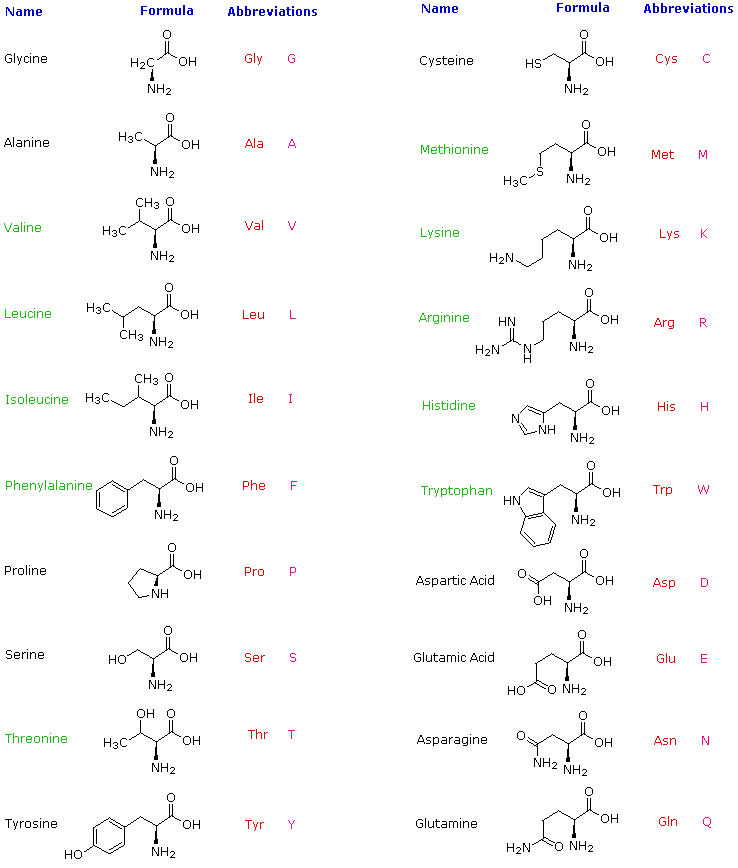
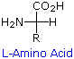
Some common features of these amino acids should be noted. With the exception of proline, they are all 1º-amines; and with the exception of glycine, they are all chiral. The configurations of the chiral amino acids are the same when written as a Fischer projection formula, as in the drawing on the right, and this was defined as the L-configuration by Fischer. The R-substituent in this structure is the remaining structural component that varies from one amino acid to another, and in proline R is a three-carbon chain that joins the nitrogen to the alpha-carbon in a five-membered ring. Applying the Cahn-Ingold-Prelog notation, all these natural chiral amino acids, with the exception of cysteine, have an S-configuration.For the first seven compounds in the left column the R-substituent is a hydrocarbon. The last three entries in the left column have hydroxyl functional groups, and the first two amino acids in the right column incorporate thiol and sulfide groups respectively. Lysine and arginine have basic amine functions in their side-chains; histidine and tryptophan have less basic nitrogen heterocyclic rings as substituents. Finally, carboxylic acid side-chains are substituents on aspartic and glutamic acid, and the last two compounds in the right column are their corresponding amides.
The formulas for the amino acids written above are simple covalent bond representations based upon previous understanding of mono-functional analogs. The formulas are in fact incorrect. This is evident from a comparison of the physical properties listed in the following table. All four compounds in the table are roughly the same size, and all have moderate to excellent water solubility. The first two are simple carboxylic acids, and the third is an amino alcohol. All three compounds are soluble in organic solvents (e.g. ether) and have relatively low melting points. The carboxylic acids have pKa's near 4.5, and the conjugate acid of the amine has a pKa of 10. The simple amino acid alanine is the last entry. By contrast, it is very high melting (with decomposition), insoluble in organic solvents, and a million times weaker as an acid than ordinary carboxylic acids.
Compound
Formula
Mol.Wt.
Solubilityin Water
Solubilityin Ether
MeltingPoint
pKa
These differences all point to internal salt formation by a proton transfer from the acidic carboxyl function to the basic amino group. The resulting ammonium carboxylate structure, commonly referred to as a zwitterion, is also supported by the spectroscopic characteristics of alanine.
As expected from its ionic character, the alanine zwitterion is high melting, insoluble in nonpolar solvents and has the acid strength of a 1º-ammonium ion. To the right above is a Jmol display of an L-amino acid. The model will change to its zwitterionic form by clicking the appropriate button beneath the display. Examples of a few specific amino acids may also be viewed in their favored neutral zwitterionic form. Note that in lysine the amine function farthest from the carboxyl group is more basic than the alpha-amine. Consequently, the positively charged ammonium moiety formed at the chain terminus is attracted to the negative carboxylate, resulting in a coiled conformation.
Since amino acids, as well as peptides and proteins, incorporate both acidic and basic functional groups, the predominant molecular species present in an aqueous solution will depend on the pH of the solution. In order to determine the nature of the molecular and ionic species that are present in aqueous solutions at different pH's, we make use of the Henderson - Hasselbalch Equation, written below. Here, the pKa represents the acidity of a specific conjugate acid function (HA). When the pH of the solution equals pKa, the concentrations of HA and A(-) must be equal (log 1 = 0).
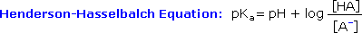
The titration curve for alanine, shown below, demonstrates this relationship. At a pH lower than 2, both the carboxylate and amine functions are protonated, so the alanine molecule has a net positive charge. At a pH greater than 10, the amine exists as a neutral base and the carboxyl as its conjugate base, so the alanine molecule has a net negative charge. At intermediate pH's the zwitterion concentration increases, and at a characteristic pH, called the isoelectric point (pI), the negatively and positively charged molecular species are present in equal concentration. This behavior is general for simple (difunctional) amino acids. Starting from a fully protonated state, the pKa's of the acidic functions range from 1.8 to 2.4 for -CO2H, and 8.8 to 9.7 for -NH3(+). The isoelectric points range from 5.5 to 6.2. Titration curves show the neutralization of these acids by added base, and the change in pH during the titration.
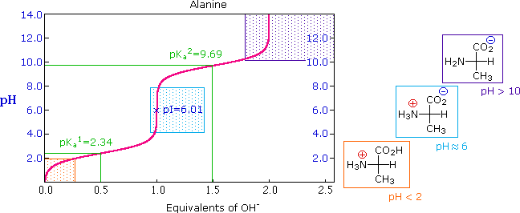
Titration curves for many other amino acids may be examined at a useful site provided by The University of Virginia in Charlottesville. (Click this name)
The distribution of charged species in a sample can be shown experimentally by observing the movement of solute molecules in an electric field, using the technique of electrophoresis. For such experiments an ionic buffer solution is incorporated in a solid matrix layer, composed of paper or a crosslinked gelatin-like substance. A small amount of the amino acid, peptide or protein sample is placed near the center of the matrix strip and an electric potential is applied at the ends of the strip, as shown in the following diagram. The solid structure of the matrix retards the diffusion of the solute molecules, which will remain where they are inserted, unless acted upon by the electrostatic potential. In the example shown here, four different amino acids are examined simultaneously in a pH 6.00 buffered medium. To see the result of this experiment, click on the illustration. Note that the colors in the display are only a convenient reference, since these amino acids are colorless.
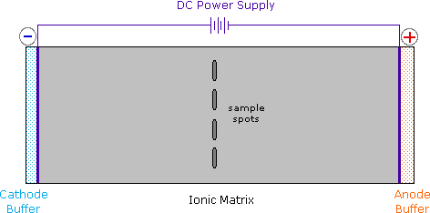
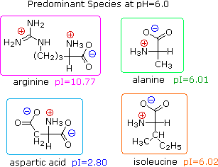
At pH 6.00 alanine and isoleucine exist on average as neutral zwitterionic molecules, and are not influenced by the electric field. Arginine is a basic amino acid. Both base functions exist as "onium" conjugate acids in the pH 6.00 matrix. The solute molecules of arginine therefore carry an excess positive charge, and they move toward the cathode. The two carboxyl functions in aspartic acid are both ionized at pH 6.00, and the negatively charged solute molecules move toward the anode in the electric field. Structures for all these species are shown to the right of the display.
pKa Values of Polyfunctional Amino Acids
It should be clear that the result of this experiment is critically dependent on the pH of the matrix buffer. If we were to repeat the electrophoresis of these compounds at a pH of 3.80, the aspartic acid would remain at its point of origin, and the other amino acids would move toward the cathode. Ignoring differences in molecular size and shape, the arginine would move twice as fast as the alanine and isoleucine because its solute molecules on average would carry a double positive charge.
As noted earlier, the titration curves of simple amino acids display two inflection points, one due to the strongly acidic carboxyl group (pKa1 = 1.8 to 2.4), and the other for the less acidic ammonium function (pKa2 = 8.8 to 9.7). For the 2º-amino acid proline, pKa2 is 10.6, reflecting the greater basicity of 2º-amines. Some amino acids have additional acidic or basic functions in their side chains. These compounds are listed in the table on the right. A third pKa, representing the acidity or basicity of the extra function, is listed in the fourth column of the table. The pI's of these amino acids (last column) are often very different from those noted above for the simpler members. As expected, such compounds display three inflection points in their titration curves, illustrated by the titrations of arginine and aspartic acid shown below. For each of these compounds four possible charged species are possible, one of which has no overall charge. Formulas for these species are written to the right of the titration curves, together with the pH at which each is expected to predominate. The very high pH required to remove the last acidic proton from arginine reflects the exceptionally high basicity of the guanidine moiety at the end of the side chain.
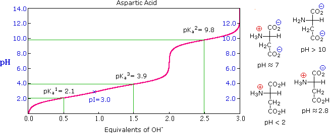
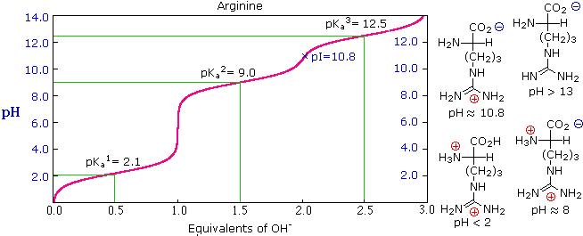
As defined above, the isoelectric point, pI, is the pH of an aqueous solution of an amino acid (or peptide) at which the molecules on average have no net charge. In other words, the positively charged groups are exactly balanced by the negatively charged groups. For simple amino acids such as alanine, the pI is an average of the pKa's of the carboxyl (2.34) and ammonium (9.69) groups. Thus, the pI for alanine is calculated to be: (2.34 + 9.69)/2 = 6.02, the experimentally determined value. If additional acidic or basic groups are present as side-chain functions, the pI is the average of the pKa's of the two most similar acids. To assist in determining similarity we define two classes of acids. The first consists of acids that are neutral in their protonated form (e.g. CO2H & SH). The second includes acids that are positively charged in their protonated state (e.g. -NH3+). In the case of aspartic acid, the similar acids are the alpha-carboxyl function (pKa = 2.1) and the side-chain carboxyl function (pKa = 3.9), so pI = (2.1 + 3.9)/2 = 3.0. For arginine, the similar acids are the guanidinium species on the side-chain (pKa = 12.5) and the alpha-ammonium function (pKa = 9.0), so the calculated pI = (12.5 + 9.0)/2 = 10.75.
The twenty alpha-amino acids listed above are the primary components of proteins, their incorporation being governed by the genetic code. Many other naturally occurring amino acids exist, and the structures of a few of these are displayed below. Some, such as hydroxylysine and hydroxyproline, are simply functionalized derivatives of a previously described compound. These two amino acids are found only in collagen, a common structural protein. Homoserine and homocysteine are higher homologs of their namesakes. The amino group in beta-alanine has moved to the end of the three-carbon chain. It is a component of pantothenic acid, HOCH2C(CH3)2CH(OH)CONHCH2CH2CO2H, a member of the vitamin B complex and an essential nutrient. Acetyl coenzyme A is a pyrophosphorylated derivative of a pantothenic acid amide. The gamma-amino homolog GABA is a neurotransmitter inhibitor and antihypertensive agent.
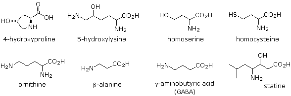
Many unusual amino acids, including D-enantiomers of some common acids, are produced by microorganisms. These include ornithine, which is a component of the antibiotic bacitracin A, and statin, found as part of a pentapeptide that inhibits the action of the digestive enzyme pepsin.
Amino acids undergo most of the chemical reactions characteristic of each function, assuming the pH is adjusted to an appropriate value. Esterification of the carboxylic acid is usually conducted under acidic conditions, as shown in the two equations written below. Under such conditions, amine functions are converted to their ammonium salts and carboxyic acids are not dissociated. The first equation is a typical Fischer esterification involving methanol. The initial product is a stable ammonium salt. The amino ester formed by neutralization of this salt is unstable, due to acylation of the amine by the ester function. The second reaction illustrates benzylation of the two carboxylic acid functions of aspartic acid, using p-toluenesulfonic acid as an acid catalyst. Once the carboxyl function is esterified, zwitterionic species are no longer possible and the product behaves like any 1º-amine.
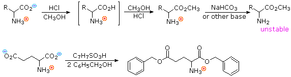
In order to convert the amine function of an amino acid into an amide, the pH of the solution must be raised to 10 or higher so that free amine nucleophiles are present in the reaction system. Carboxylic acids are all converted to carboxylate anions at such a high pH, and do not interfere with amine acylation reactions. The following two reactions are illustrative. In the first, an acid chloride serves as the acylating reagent. This is a good example of the superior nucleophilicity of nitrogen in acylation reactions, since water and hydroxide anion are also present as competing nucleophiles. A similar selectivity favoring amines was observed in the Hinsberg test. The second reaction employs an anhydride-like reagent for the acylation. This is a particularly useful procedure in peptide synthesis, thanks to the ease with which the t-butylcarbonyl (t-BOC) group can be removed at a later stage. Since amides are only weakly basic ( pKa~ -1), the resulting amino acid derivatives do not display zwitterionic character, and may be converted to a variety of carboxylic acid derivatives.
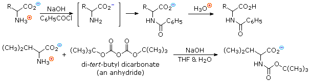
In addition to these common reactions of amines and carboxylic acids, common alpha-amino acids, except proline, undergo a unique reaction with the triketohydrindene hydrate known as ninhydrin. Among the products of this unusual reaction (shown on the left below) is a purple colored imino derivative, which provides as a useful color test for these amino acids, most of which are colorless. A common application of the ninhydrin test is the visualization of amino acids in paper chromatography. As shown in the graphic on the right, samples of amino acids or mixtures thereof are applied along a line near the bottom of a rectangular sheet of paper (the baseline). The bottom edge of the paper is immersed in an aqueous buffer, and this liquid climbs slowly toward the top edge. As the solvent front passes the sample spots, the compounds in each sample are carried along at a rate which is characteristic of their functionality, size and interaction with the cellulose matrix of the paper. Some compounds move rapidly up the paper, while others may scarcely move at all. The ratio of the distance a compound moves from the baseline to the distance of the solvent front from the baseline is defined as the retardation (or retention) factor Rf. Different amino acids usually have different Rf's under suitable conditions. In the example on the right, the three sample compounds (1, 2 & 3) have respective Rf values of 0.54, 0.36 & 0.78. To animate this diagram Click on It.
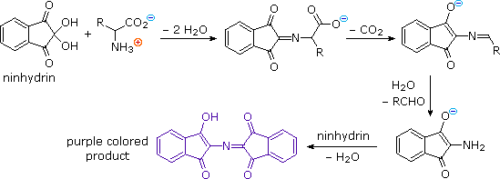
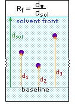
Paper Chromatography
The mild oxidant iodine reacts selectively with certain amino acid side groups. These include the phenolic ring in tyrosine, and the heterocyclic rings in tryptophan and histidine, which all yield products of electrophilic iodination. In addition, the sulfur groups in cysteine and methionine are also oxidized by iodine. Quantitative measurement of iodine consumption has been used to determine the number of such residues in peptides. The basic functions in lysine and arginine are onium cations at pH less than 8, and are unreactive in that state. Cysteine is a thiol, and like most thiols it is oxidatively dimerized to a disulfide, which is sometimes listed as a distinct amino acid under the name cystine. Disulfide bonds of this kind are found in many peptides and proteins. For example, the two peptide chains that constitute insulin are held together by two disulfide links. Our hair consists of a fibrous protein called keratin, which contains an unusually large proportion of cysteine. In the manipulation called "permanent waving", disulfide bonds are first broken and then created after the hair has been reshaped. Treatment with dilute aqueous iodine oxidizes the methionine sulfur atom to a sulfoxide.
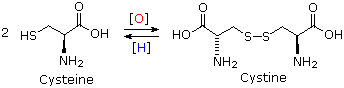
1) Amination of alpha-bromocarboxylic acids, illustrated by the following equation, provides a straightforward method for preparing alpha-aminocarboxylic acids. The bromoacids, in turn, are conveniently prepared from carboxylic acids by reaction with Br2 + PCl3. Although this direct approach gave mediocre results when used to prepare simple amines from alkyl halides, it is more effective for making amino acids, thanks to the reduced nucleophilicity of the nitrogen atom in the product. Nevertheless, more complex procedures that give good yields of pure compounds are often chosen for amino acid synthesis.
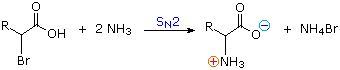
2) By modifying the nitrogen as a phthalimide salt, the propensity of amines to undergo multiple substitutions is removed, and a single clean substitution reaction of 1º- and many 2º-alkylhalides takes place. This procedure, known as the Gabriel synthesis, can be used to advantage in aminating bromomalonic esters, as shown in the upper equation of the following scheme. Since the phthalimide substituted malonic ester has an acidic hydrogen (colored orange), activated by the two ester groups, this intermediate may be converted to an ambident anion and alkylated. Finally, base catalyzed hydrolysis of the phthalimide moiety and the esters, followed by acidification and thermal decarboxylation, produces an amino acid and phthalic acid (not shown).
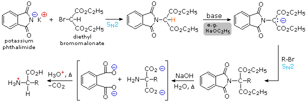
3) An elegant procedure, known as the Strecker synthesis, assembles an alpha-amino acid from ammonia (the amine precursor), cyanide (the carboxyl precursor), and an aldehyde. This reaction (shown below) is essentially an imino analog of cyanohydrin formation. The alpha-amino nitrile formed in this way can then be hydrolyzed to an amino acid by either acid or base catalysis.
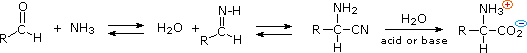
4) Resolution The three synthetic procedures described above, and many others that can be conceived, give racemic amino acid products. If pure L or D enantiomers are desired, it is necessary to resolve these racemic mixtures. A common method of resolving racemates is by diastereomeric salt formation with a pure chiral acid or base. This is illustrated for a generic amino acid in the following diagram. Be careful to distinguish charge symbols, shown in colored circles, from optical rotation signs, shown in parenthesis. In the initial display, the carboxylic acid function contributes to diastereomeric salt formation. The racemic amino acid is first converted to a benzamide derivative to remove the basic character of the amino group. Next, an ammonium salt is formed by combining the carboxylic acid with an optically pure amine, such as brucine (a relative of strychnine). The structure of this amine is not shown, because it is not a critical factor in the logical progression of steps. Since the amino acid moiety is racemic and the base is a single enantiomer (levorotatory in this example), an equimolar mixture of diastereomeric salts is formed (drawn in the green shaded box). Diastereomers may be separated by crystallization, chromatography or other physical manipulation, and in this way one of the isomers may be isolated for further treatment, in this illustration it is the (+):(-) diastereomer. Finally the salt is broken by acid treatment, giving the resolved (+)-amino acid derivative together with the recovered resolving agent (the optically active amine). Of course, the same procedure could be used to obtain the (-)-enantiomer of the amino acid.
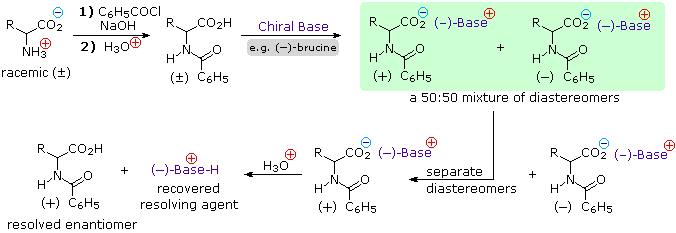
Since amino acids are amphoteric, resolution could also be achieved by using the basic character of the amine function. For this approach we would need an enantiomerically pure chiral acid such as tartaric acid to use as the resolving agent. By clicking on the above diagram, this alternative resolution strategy will be illustrated. Note that the carboxylic acid function is first esterified, so that it will not compete with the resolving acid. Resolution of aminoacid derivatives may also be achieved by enzymatic discrimination in the hydrolysis of amides. For example, an aminoacylase enzyme from pig kidneys cleaves an amide derivative of a natural L-amino acid much faster than it does the D-enantiomer. If the racemic mixture of amides shown in the green shaded box above is treated with this enzyme, the L-enantiomer (whatever its rotation) will be rapidly converted to its free zwitterionic form, whereas the D-enantiomer will remain largely unchanged. Here, the diastereomeric species are transition states rather than isolable intermediates. This separation of enantiomers, based on very different rates of reaction, is called kinetic resolution.
Continue to Peptides & Proteins
This page is the property of The Edvibe Team. Comments, questions and errors should be sent to contact@edvibe.co.ke. These pages are provided to the IOCD to assist in capacity building in chemical education. 05/05/2013